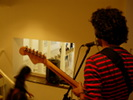
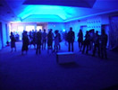
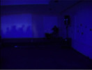

Platform Garanti binasýnda kablolar / Cables on Platform Garanti building
"4/4"ün ilk performansýný 2007 Istanbul Bienali açýlýþýnda Platform Garanti binasýnda yaptýk. Gitarlar, bas ve davul
olmak üzere binanýn 4 katýna daðýldýk. Binanýn dýþýndan kablolar geçirilerek her katta kurulan ayrý bir ses sistemi ile sadece o kattaki enstrümanýn sesi
duyulabiliyordu. Binanýn avlusuna ise bu 4 sesin birleþimi yayýnlanýyordu. Cem, sergi salonunda; Kerem, birinci kat
merdivenlerinde; Gökhan, ikinci kat merdivenlerinde; Cevdet üst kattaki toplantý salonunda; birbirimizi görmeden çaldýk.
Binayý gezenler durduklarý yere göre seslerin deðiþik karýþýmlarýný duydular.
We performed "4/4" first time for the opening of 2007 Istanbul Biennial in Platform Garanti building. Guitars, bass and drums
were positioned on separate floors of the building. Separate PA systems were installed via cabling outside the building so that in each floor
only one instrument could be heard. In the courtyard the main mix of the song could be heard. Cem, in the gallery; Kerem, in first floor
stairs: Gökhan, in second floor stairs; Cevdet, on the hall at the top floor; we played without seeing each other. Audience walking in the building
experienced different mixes of the four voices.
Aylýk Nekropsi icin "4/4"ü yeniden kaydettik.
We've recorded "4/4" again for Aylýk Nekropsi.
Released 31 January 2013
BPM: 135
Cem: Gitar/Guitar
Cevdet: Davul/Drums
Kerem: Bas/Bass
Gökhan: Gitar/Guitar
Davul ve Cem'in gitar Maslak 1024'te, Bas Kerem'in evinde ve Gökhan'ýn gitar Afacan sokakta evde Ocak 2013'de kaydedildi.
Edit, miks ve mastering Maslak 1024'te hep beraber yapýldý.
Kapak resmi Platform Garanti için Cevdet'in çizdiði el ilaný.
Murat 1024 Gülbay ve daimi sesçimiz Gökhan Deneç'e sonsuz teþekkürler.
Drums and Cem's guitar were recorded at Maslak 1024, bass was recorded at Kerem's house and Gökhan's guitar was recorded
at home in Afacan street in January 2013.
Editing, mixing and mastering was done all together at Maslak 1024.
Cover image is Platform Garanti handout prepared by Cevdet.
Many thanks to Murat 1024 Gülbay
and our permanent tonmaister Gökhan Deneç.
|  | ||||
|  |  |
{kind=link}
{kind=link}
{kind=link}
{kind=link}
{kind=link}
{kind=link}
{kind=link}
{kind=link}
{kind=link}
{kind=link}
{kind=link}
{kind=link}
{kind=link}
{kind=link}
{kind=link}
{kind=link}
{kind=link}
{kind=link}
{kind=link}